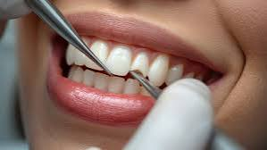

🦷 Porselen Lamine Veneer Çözümlerimiz


Porselen Laminate Veneer restorasyonlar, minimum invaziv (diş dokusuna en az müdahale) felsefesinin dental teknolojideki en şık karşılığıdır. Genellikle dişlerin ön yüzeylerinden yalnızca 0.3 - 0.5 mm gibi ultra ince bir doku kaldırılmasıyla, hatta bazı vakalarda hiç aşındırma yapılmadan (No-Prep) doğrudan diş yüzeyine uygulanan yaprak porselenlerdir.
Karaca Dental laboratuvar ortamında mikron hassasiyetindeki CAD/CAM frezeleme ve presleme teknolojileriyle üretilen bu yapraklar, kontakt lens inceliğinde olmalarına rağmen diş yüzeyine özel rezin yapıştırıcılarla bağlandıklarında dişin kendi emayesinden daha yüksek bir kopma direnci kazanırlar. Kahve, çay veya sigara gibi dış etkenlerle asla renk değiştirmezler. Ön bölgedeki aralıklı dişlerin (diastema) kapatılmasında, çapraşıklıkların düzeltilmesinde ve kalıcı renk bozukluklarının giderilmesinde hekimlerimize kusursuz bir estetik silah sunuyoruz.
⬅ Ana Sayfaya Dön